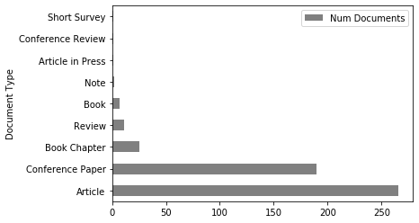
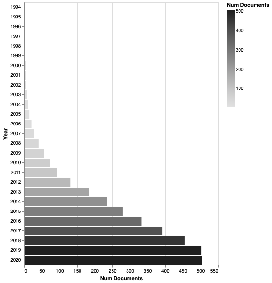
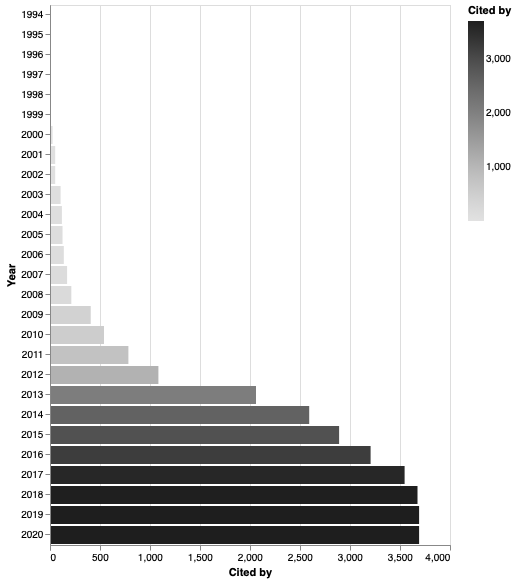

First level analysis¶
[1]:
import pandas as pd
from techminer import RecordsDataFrame
rdf = RecordsDataFrame(
pd.read_json(
'step-06.json',
orient='records',
lines=True))
In this part, a basic analysis of the bibliographical information is done. The term ‘basic’ refers to analyses that can be made by executing queries over a field of the dataframe.
documents_by_term
documents_by_year
citations_by_year
Documents by term¶
Document type
Source title
Authors
Affiliation
Country
Author Keywords
Index Keywords
Number of authors
By document type¶
[2]:
rdf.documents_by_term('Document Type')
[2]:
| Document Type | Num Documents | |
|---|---|---|
| 0 | Article | 266 |
| 4 | Conference Paper | 190 |
| 3 | Book Chapter | 25 |
| 7 | Review | 11 |
| 2 | Book | 7 |
| 6 | Note | 2 |
| 1 | Article in Press | 1 |
| 5 | Conference Review | 1 |
| 8 | Short Survey | 1 |
[3]:
rdf.documents_by_term('Document Type').plot.barh('Document Type', 'Num Documents', color='gray');

[4]:
rdf.documents_by_term('Document Type').barhplot_in_altair()
[4]:

[5]:
rdf.documents_by_term('Document Type').barplot_in_altair()
[5]:

[6]:
rdf.documents_by_term('Document Type').barhplot_in_seaborn();

[7]:
rdf.documents_by_term('Document Type').barplot_in_seaborn();

Citations per document¶
[2]:
rdf.documents_by_term('Cited by').head()
[2]:
| Cited by | Num Documents | |
|---|---|---|
| 0 | 1.0 | 57 |
| 1 | 2.0 | 45 |
| 2 | 3.0 | 31 |
| 3 | 4.0 | 23 |
| 4 | 5.0 | 22 |
Number of authors per document¶
[9]:
rdf['Num Authors'] = rdf['Author(s) ID'].map(lambda x: len(x.split(';')))
rdf.documents_by_term('Num Authors')
[9]:
| Num Authors | Num Documents | |
|---|---|---|
| 2 | 3 | 163 |
| 3 | 4 | 133 |
| 1 | 2 | 89 |
| 4 | 5 | 67 |
| 5 | 6 | 32 |
| 6 | 7 | 9 |
| 8 | 9 | 3 |
| 0 | 1 | 2 |
| 7 | 8 | 2 |
| 11 | 15 | 2 |
| 9 | 11 | 1 |
| 10 | 12 | 1 |
Number of documents per source title¶
[3]:
rdf.documents_by_term('Source title').head()
[3]:
| Source title | Num Documents | |
|---|---|---|
| 207 | Lecture Notes in Computer Science (including s... | 33 |
| 279 | Quantitative Finance | 15 |
| 109 | Expert Systems with Applications | 11 |
| 187 | Journal of Financial Markets | 8 |
| 123 | Handbook of High Frequency Trading | 7 |
Number of documents per author¶
[4]:
rdf.documents_by_term('Authors', sep=',').head()
[4]:
| Authors | Num Documents | |
|---|---|---|
| 756 | Raudys A. | 8 |
| 793 | Sadoghi M. | 7 |
| 582 | Manahov V. | 7 |
| 408 | Jacobsen H.-A. | 7 |
| 211 | Debenham J. | 7 |
Number of documents per keyword¶
[5]:
rdf.documents_by_term('keywords (cleaned)', sep=';').head()
[5]:
| keywords (cleaned) | Num Documents | |
|---|---|---|
| 276 | Commerce | 227 |
| 931 | High-frequency trading | 189 |
| 48 | Algorithmic trading | 164 |
| 591 | Electronic trading | 137 |
| 748 | Financial markets | 103 |
Documents per country¶
[7]:
from techminer import extract_country
rdf['Country'] = rdf['Affiliations'].map(lambda x: extract_country(x, sep=';'))
rdf.documents_by_term('Country', sep=';').head()
[7]:
| Country | Num Documents | |
|---|---|---|
| 56 | United States | 193 |
| 55 | United Kingdom | 122 |
| 10 | China | 92 |
| 17 | France | 41 |
| 18 | Germany | 37 |
[8]:
rdf.documents_by_term('Country', sep=';').worldmap()

Number of documents per year¶
[9]:
rdf.documents_by_year().head()
[9]:
| Year | Num Documents | |
|---|---|---|
| 0 | 1994 | 2 |
| 1 | 1995 | 0 |
| 2 | 1996 | 0 |
| 3 | 1997 | 0 |
| 4 | 1998 | 0 |
[17]:
rdf.documents_by_year().barhplot_in_altair()
[17]:

[18]:
rdf.documents_by_year(cumulative=True).barhplot_in_altair()
[18]:

Citations per year¶
[10]:
rdf.citations_by_year().head()
[10]:
| Year | Cited by | |
|---|---|---|
| 0 | 1994 | 3 |
| 1 | 1995 | 0 |
| 2 | 1996 | 0 |
| 3 | 1997 | 0 |
| 4 | 1998 | 0 |
[20]:
rdf.citations_by_year().barhplot_in_altair()
[20]:

[21]:
rdf.citations_by_year(cumulative=True).barhplot_in_altair()
[21]:
